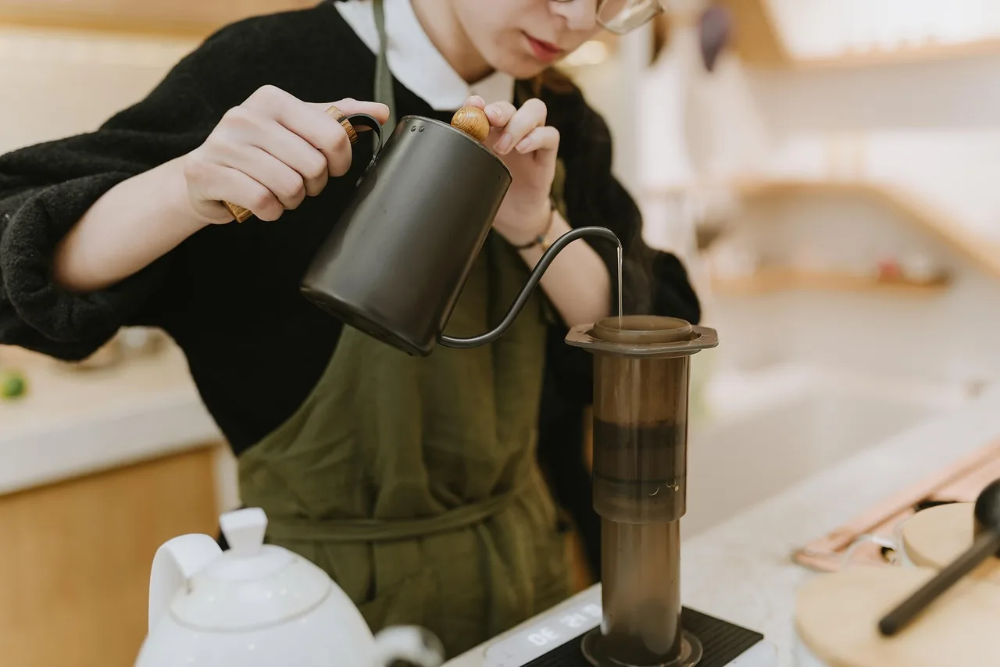

KNOWLEDGE
登録した情報で回答
スプレッドシートに登録した営業時間・料金・道順を、AIが見て案内します。
お店の情報→AIが参照→お客様へ
営業時間外の予約の電話は、24時間AIが仮受付。出られない電話は用件を聞いて、スタッフのLINEへ通知します。設定は業種のひな形から3ステップです。
任せる範囲は、あとから変更できます。
全部を自動化する必要はありません。
調理中、施術中、レジの対応中。出られなかった電話が予約だったのか、営業電話だったのかも、あとから分かりません。



約4.6倍電話の自動応答AI（ボイスボット）の国内市場は、2022年度の19億円から、2027年度に88億円へ伸びる予測です（アイ・ティ・アール調べ、2023年8月）。
飲食店や美容室で使えるAI電話も、いま各社から次々に出ています。
設定は3つだけ。業種のひな形を選び、AIか人かを決め、次の処理を選びます。AIに話させる文章を、ゼロから書く必要はありません。
予約の確定や変更は、スタッフが内容を確認して対応します。
このカテゴリの設定
人へつなぐ → スタッフが対応※ 転送・通知・折り返しの方法は、導入前にお店の電話環境と合わせて確認します。
試してみる：左のカテゴリを選び、「AIが受ける」に切り替えると、次の処理を選べる設定イメージを確認できます。
営業時間・料金・道順は、スプレッドシートに登録したお店の情報から、AIが答えます。
1本の電話が流れる道筋
どの電話を人に残すかは、お店が電話の種類ごとに決めます。
スプレッドシートに登録した営業時間・料金・道順を、AIが見て案内します。
営業時間外も予約の希望を受け付け、仮予約として内容を残します。営業開始後にスタッフが確認して確定します。
人が電話に出られないときは、AIが用件を伺い、スタッフのLINEへ知らせます。
受電のお知らせ用件：営業時間外の予約の希望
お名前：（お客様のお名前）
折り返し先：（お客様の電話番号）
※ AIが参照する情報の範囲、仮予約の確定のしかた、LINE通知の送り先は、導入前にお店と決めます。
2.3秒お客様が話し終えてから、AIが答え始めるまでの時間（中央値）。7つのAI電話を同じ質問で聞き比べたところ、最初の案内の短さと応答のそろい方は、録音した6サービスの中でいちばんでした。
弊社（株式会社ライトアップ）が2026年9月25日に、各サービス1回の通話で比べた目安です。設定や話す内容で結果は変わります。他社名は伏せて掲載。
受電代行の見直しを考えるときも、役割で比べます。AIは一次受けの整理役。最終判断や大切な会話は、人に残します。
スタッフの手を止める電話を、用件ごとに受け分ける役割。
お店の判断や、お客様との関係が大切な電話。
※ AIに任せる電話の種類は、お店ごとに決めて、あとから変えられます。
| 比べるところ | 人の電話代行 | おまかせ受電AI |
|---|---|---|
| 最初に出るのは | オペレーター | AI。大切な用件はスタッフへ |
| 受けられる時間 | 契約した時間帯 | 24時間。予約は仮受付 |
| 用件の分け方 | 代行会社の手順に沿う | お店が用件ごとに決める |
| 大切な電話 | 伝言か取り次ぎ | スタッフへ転送・通知 |
人が話すこと自体に価値があるお店は、人の電話代行が向いています。電話の多くが営業電話や定型の質問なら、AIでの一次対応が向いています。
最初から完璧な電話対応を目指さず、今いちばん困っている電話を一つ選ぶところから始めます。
まずはスタッフの負担が大きく、受け答えが決まっている電話から。
導入前に、店舗の運用と提供条件をすり合わせます。
正直に書きます。次のお店には、いま必要ありません。
サービスは始まったばかりです。一緒に育ててくださるお店を募集しています。正式な料金は調整中です。
モニター期間中の料金です。モニター期間・通話料・対象範囲などの利用条件は、お申込み時にご案内します。
無料モニターについて相談する株式会社ライトアップのお問い合わせフォームが開きます。「おまかせ受電AI 無料モニター」とお書きください。
AI電話が初めての方に向けて、導入前に気になるポイントをまとめています。
なりません。受電カテゴリごとに「人へつなぐ」を選ぶ設計です。予約・常連のお客様・急ぎの用件は人へ、という設定から始められます。
予約の希望を24時間受け付け、仮予約として内容を残します。営業開始後にスタッフが内容を確認し、予約を確定します。
その場で完結、スタッフへ転送、内容を通知して折り返し、から電話の種類ごとに選びます。転送や通知の方法は、導入前にお店の電話環境と合わせて確認します。
今の番号から転送して使う形を想定しています。回線の種類や転送の条件で変わるため、導入前に確認します。
いまは先着30社ほどの無料モニターを募集しています。モニター期間中は初期費用・月額費用とも0円です。通話料や期間などの条件はお申込み時にご案内します。正式な料金は調整中です。
全部をAIに任せる必要はありません。いちばん困っている電話を一つ選んで、無料モニターで試してください。